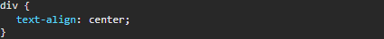

Opdracht 3
Waarom staat de tekst in de blokken horizontaal gecentreerd?
Dit komt omdat men deze code heeft gebruikt in hun css.

Ga na dat een property vertical-align:center geen effect heeft. Waarom eigenlijk niet?
Je kan center niet ingeven bij vertical-align. Je moet middle gebruiken in plaats van center.
Ga na dat vertical-align:middle er niet voor zorgt dat de tekst verticaal gecentreerd wordt. Wat
doet vertical-align dan wel?
Vertical-align zorgt ervoor dat het elementje in het middne wordt geplaatst ten opzichte van de rest.
Hij zal dus de rest naar beneden duwen zodat het elementje in het midden is van de rest
Wat is de ‘simpele’ manier om een één enkele regel tekst verticaal te centreren?
(tip:line-height)
Je moet line-height toevoegen bij je .area en deze moet je op evenveel px plaatsen zals je height.
Welke truc wordt vaak gebruikt om meerdere regels verticaal te centreren?
(tip: table cell)
Je moet 'display:table-cell' gebruiken en ook 'vertical-align:middle'.
In 'styles.css' staan twee verschillende CSS regels die de height instellen van een element met
class="area tall". Waarom krijgt de regel voor class 'tall' voorrang?
Ze hebben dezelfde specifity maar de class tall staat later in de code dus deze heeft voorrang.